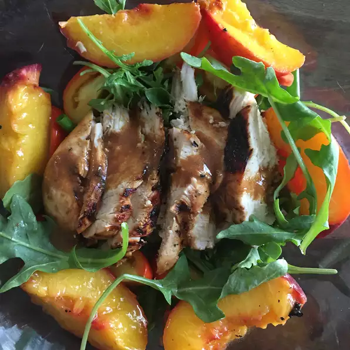

Grilled Chicken, Peach, and Arugula Salad

Description
Healthy and easy-to-make food perfect for post-workout session
Ingredients
- 5 tablespoons olive oil, divided
- 1 tablespoon balsamic vinegar
- 1 tablespoon chopped shallot
- 1 teaspoon Dijon mustard
- ½ teaspoon salt, or more to taste
- 4 peaches, halved and pitted
- 4 skinless, boneless chicken breast halves
- 8 cups baby arugula
Steps
- Preheat an outdoor grill for medium-high heat and lightly oil the grate.
- Whisk ¼ cup olive oil, balsamic vinegar, shallot, Dijon mustard, and ½ teaspoon salt together in a bowl until dressing is well mixed.
- Brush 1 teaspoon oil onto cut-side of peaches.
- Place peaches, cut-side down, onto grill and cook until heated through, about 4 minutes. Transfer peaches to a plate.
- Brush remaining oil onto both sides of chicken breasts and season with salt.
- Cook chicken on grill until no longer pink in the center, about 4 minutes per side. An instant-read thermometer inserted into the center should read at least 165 degrees F (74 degrees C). Slice chicken into thin pieces and cut peaches into ½-inch thick pieces.
- Toss arugula and dressing together in a bowl. Divide dressed arugula among plates; top with peaches and chicken.